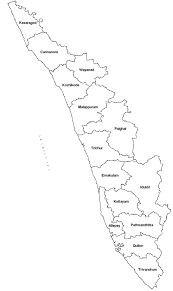

- Trivandrum
- Kollam
- Pathanamthitta
- Alappuzha
- Kottayam
- Idukki
- Ernamkulam
- Thrissur
- Palakkad
- Malappuram
- Kozhikkode
- Wayanad
- Kannur
- Kazargode 
Kerala has an endless list of tourist destinations that will interest any traveller. Renowned for its scenic locations and natural beauty, Kerala is sure to enchant any nature lover with its hills, backwaters, beaches, waterfalls and wildlife. The state also has a rich heritage and thriving culture one can explore by visiting the various forts, palaces, museums, monuments and pilgrim centers. Both natural and manmade brilliance await you at every turn. Flanked by the Arabian Sea in the West, the towering Western Ghats in the East and networked by 44 interconnected rivers, Kerala is blessed with a unique set of geographical features that have made it one of the most sought after tourist destinations in Asia. A long shoreline with serene beaches, tranquil stretches of emerald backwaters, lush hill stations and exotic wildlife, are just a few of the wonders that await you once you crossover to the other side. And what's more, each of these charming destinations is only a two hour drive from the other - a singular advantage no other place on the planet can offer. Kerala prides itself for being the flag bearer for not just how a culture can respect its past but also march forward with growth & progress as well. Hundred percent literacy, world-class health care systems, India's lowest infant mortality and highest life expectancy rates are among a few of the milestones that the people of the state are extremely proud of.